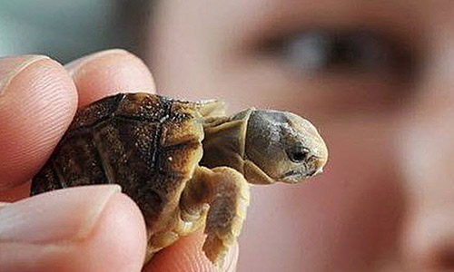

-один из четырёх современных отрядов пресмыкающихся. Содержит около 328 современных видов, группируемых в 14 семейств и два подотряда Перейти к разделу . Ископаемые остатки черепах прослеживаются на протяжении более 220 миллионов лет.
Несмотря на то, что традиционно черепахи рассматривались как анапсиды, все генетические исследования подтвердили гипотезу о том, что черепахи — это диапсиды с редуцированными височными окнами; некоторые авторы помещали черепах в группу лепидозавроморф, хотя все более поздние исследования подтвердили их положение внутри группы архозавроморф.
Отличительным признаком черепах является панцирь, состоящий из двух частей: карапакса и пластрона, и служащий основной защитой от врагов.
Перейти к разделу Черепахи распространены в тропической и умеренной климатических зонах почти по всей Земле. Экологически их подразделяют на морских и наземных, а наземных, в свою очередь, на сухопутных и пресноводных.
Многие виды черепах служат пищей человекуПерейти к разделу . Также многие виды черепах находятся под угрозой вымирания разной степени и охраняютсяПерейти к разделу. Черепаха является распространённым символом в культуре многих народовПерейти к разделу .
Эволюционная цепочка от Парарептилий к черепахам до сих пор не определена. Но условно черепахи считаются потомками пермских котилозавров. Первая черепаха Proganochelys quenstedi появилась в Мезозойскую эру в Триасовый период (200 млн.лет назад). Из 26 семейств 12 дожило до наших дней. Многие современные черепахи сейчас находятся на грани исчезновения. Известно множество ископаемых черепах, среди которых самой крупной была миолания (en), длиной около 2,5 м. Черепаха, вероятно, имела огромный, практически одной длины с панцирем, мощный хвост усаженный двумя рядами костяных уплощенных шипов, а на концах треугольного черепа располагались длинные притупленные «рога», направленные назад и вбок. Есть мнение, что черепахи произошли от особых амфибий — дискозавриксов.
Размеры черепах изменяются в довольно большом диапазоне. Морские виды, как правило, больше наземных и речных сородичей. Самыми большими являются кожистые черепахи — представители вида Dermochelys coriacea, с длиной панциря 2 м и весом более 900 кг. Вымершие сухопутные черепахи рода миолания вырастали до 2,5 м, но самой большой является жившая в меловом периоде морская черепаха Archelon ischyros, размер одного из обнаруженных скелетов этого вида достигает более 4 метров. Предполагаемая масса этой черепахи — до 2,2 тонн. Самой маленькой из черепах является крапчатая, или намаквалендская черепаха (Homopus signatus), не превышающая 10 см в длину.
Современных черепах можно безошибочно отличить от других животных по наличию панциря. Панцирь состоит из спинного щита — карапакса и брюшного — пластрона. Сверху у большинства черепах панцирь покрыт симметричными роговыми щитками. Спереди и сзади панцирь имеет отверстия, через которые животное выдвигает свои конечности. У некоторых видов подвижные части панциря могут плотно закрывать оба отверстия (или одно из них) в минуту опасности. Форма панциря связана с образом жизни черепах: у наземных видов он высокий, куполообразный, часто бугорчатый, у пресноводных — низкий, уплощённый и гладкий, у морских имеет обтекаемую каплевидную форму.
На спинном щите выделяются шейный, позвоночные, боковые и краевые щитки, на брюшном — горловой, межгорловые, плечевые, грудные, брюшные, бедренные, заднепроходные, подмышечные, паховые и межкраевые щитки. Каждый щиток растёт самостоятельно, и на нём вырастают концентрические годовые кольца.
Самки откладывают яйца в кувшинообразную ямку, которую они выкапывают задними ногами. Затем ямка засыпается и утрамбовывается сверху ударами пластрона. Яйца шарообразные или эллиптические, белого цвета, покрыты твёрдой известковой скорлупой. Лишь у морских и некоторых бокошейных черепах яйца покрыты мягкой кожистой оболочкой. Число откладываемых яиц колеблется у разных видов от нескольких штук до сотни. Многие черепахи имеют несколько кладок в течение сезона.

Черепахи ведут одиночный образ жизни и обычно ищут общества себе подобных только в брачный период, хотя некоторые виды могут собираться в группы на время зимовки.
Сухопутные черепахи питаются в основном растительной пищей, а пресноводные, наоборот, в большинстве своём хищники. Они поедают различных моллюсков, членистоногих, рыб и других позвоночных. Но и те и другие охотно включают в свой рацион корма, казалось бы, совершенно им несвойственные: растиельноядные — животную пищу, хищники — растительную. Среди морских черепах есть и хищные, и растительноядные, и всеядные виды.
Черепахи являются одними из любимых домашних животных. Они неприхотливы и выносливы, долго живут даже в условиях российских квартир и особенно любимы детьми. Встречаются случаи, когда черепахи передаются родственниками из поколения в поколение.
Нередко встречается дружба черепахи с другими домашними животными: с кошкой, попугаем, собакой. Теряются черепахи, как правило, на даче, где хозяева выпускают их погреться на солнышке.
Вкусное черепашье мясо — основной фактор истребления черепах человеком. Многие популяции сухопутных черепах сокращаются вследствие застройки или использования в других хозяйственных целях населяемых ими земель. В некоторых случаях землепользователи делают попытки переселить охраняемых законом черепах с освояемых земель на другие территории, но такие программы не всегда успешны. К примеру, в марте 2008 г. Армия США перевезла вертолётами 670 пустынных западных гоферов с территорий, на которых создается новый полигон для учений в Форт-Ирвине , в другие части пустыни Мохаве. Однако, как было вскоре обнаружено, перемещённые черепахи плохо приживаются на новом месте, и часто поедаются местными койотами. Это привело к приостановке программы переселения.
Мировое распространение черепах
Разнообразные виды черепах населяют большую часть суши и вод тропического и умеренного поясов. Их нет в холодных краях, некоторых пустынях, на тихоокеанском побережье Южной Америки, и в Новой Зеландии.